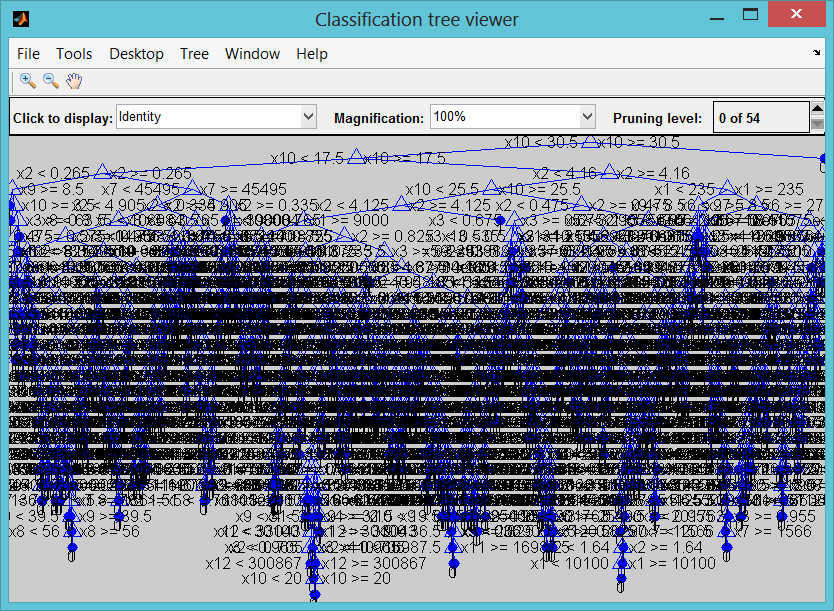

Importing data from the CSV file
penguin = importfile('penguin.17-10-2014-20-10-2014-utf8.csv'); save('penguin.mat');
Contents
- Loading data
- Continuous prediction
- Predictor and output matrix building
- Single regression tree
- Tree performance on validating and training set : pruning the tree
- Discontinuous prediction
- Predictor and output matrix building
- Single regression tree
- Tree performance on validating and training set : pruning the tree
- Bootstrapped aggregated tree
- Parallel bootstrapped aggregated tree
- Performance computation
- Which leaf size is the best for the tree : once again prune the bagged trees
- Feature selection
Loading data
load('penguin.mat');
Continuous prediction
Predictor and output matrix building
predictor matrix
X = [penguin.KeywordVolume penguin.KeywordCpc penguin.KeywordCompetition penguin.Pr penguin.Alexa penguin.RefPages penguin.RefDomains penguin.CitationFlow penguin.TrustFlow penguin.YesterdayPos penguin.ExactAnchorsRefDomains penguin.ExactAnchorsRefPages penguin.ContainingAnchorsRefDomains penguin.ContainingAnchorsRefPages];
% output vector we try to forecast penguin.TodayPos penguin.Change penguin.Change_abs
Y = penguin.Change;
Single regression tree
pt = cvpartition(Y,'holdout',0.5); % Extract predictors and responses for both sets Y_t = Y(training(pt)); X_t = X(training(pt),:); Y_v = Y(test(pt)); X_v = X(test(pt),:); t = classregtree(X_t,Y_t); % See tree view(t)
Warning: Ignoring rows in GROUP with missing values. Warning: The training set does not contain points from all groups.
Tree performance on validating and training set : pruning the tree
How well did the single tree perform on the training set very well but overfit the noise
predY = t(X_t); disp('Full tree training set') training_residus = predY-Y_t; figure; hist(training_residus,100) title('Training histogram error'); figure; plot(1:length(predY),predY,1:length(Y_t),Y_t); title('Training point to point error'); errpct = abs(training_residus)./Y_t*100; MAE = mean(abs(errpct)); disp(MAE); % Calculate the single tree's predictions on the validating set... predY = t(X_v); disp('Full tree validating set') figure; plot(1:length(predY),predY,1:length(Y_v),Y_v); title('Validating point to point error'); validating_residus = predY-Y_v; figure; hist(validating_residus,100) title('Validating histogram error'); errpct = abs(validating_residus)./Y_v*100; MAE = mean(abs(errpct)); disp(MAE);
Full tree training set 55.9633 Full tree validating set 146.4844
Discontinuous prediction
Predictor and output matrix building
predictor matrix
X = [penguin.KeywordVolume penguin.KeywordCpc penguin.KeywordCompetition penguin.Pr penguin.Alexa penguin.RefPages penguin.RefDomains penguin.CitationFlow penguin.TrustFlow penguin.YesterdayPos penguin.ExactAnchorsRefDomains penguin.ExactAnchorsRefPages penguin.ContainingAnchorsRefDomains penguin.ContainingAnchorsRefPages];
% output vector we try to forecast penguin.TodayPos penguin.Change penguin.Change_abs
Y = penguin.Change <= -7;
Single regression tree
pt = cvpartition(Y,'holdout',0.5); % Extract predictors and responses for both sets Y_t = Y(training(pt)); X_t = X(training(pt),:); Y_v = Y(test(pt)); X_v = X(test(pt),:); t = classregtree(X_t,Y_t); % See tree view(t)
Tree performance on validating and training set : pruning the tree
How well did the single tree perform on the training set very well but overfit the noise
predY = t(X_t); disp('Full tree training set') testErrorRate(predY,Y_t); % Calculate the single tree's predictions on the validating set... predY = t(X_v); disp('Full tree validating set') testErrorRate(predY,Y_v); % % %% Pruning the single tree by estimating the cost on the validating set % % [cost,secost,ntnodes,bestlevel] = test(t, 'test', X_v, Y_v); % % topt = prune(t, 'level', bestlevel); % % view(topt) % % % % % Pruned tree is better on the validating set ! % % % does not overfit the noise % % predY = topt(X_v); % % disp('Pruned tree validating set') % % testErrorRate(predY,Y_v );
Full tree training set Tree, % Good classified rate on set : 92.3771 Full tree validating set Tree, % Good classified rate on set : 69.1353
Bootstrapped aggregated tree
nTrees = 50; tic; b = TreeBagger(nTrees, X_t, Y_t); % Prediction on the training set [predY,allpred,devs] = predict(b,X_t); disp('Bagged trees training set') testErrorRate(predY,Y_t); % Prediction on the validating set [predY,allpred,devs] = predict(b,X_v); disp('Bagged trees validating set') testErrorRate(predY,Y_v);
Bagged trees training set Tree, % Good classified rate on set : 99.299 Bagged trees validating set Tree, % Good classified rate on set : 73.9866
Parallel bootstrapped aggregated tree
crossval, jackknife, bootstrp
nTrees = 50; matlabpool open local; opt = statset('UseParallel','always'); tic; b = TreeBagger(nTrees, X, Y, 'opt',opt); toc; matlabpool close;
Warning: matlabpool will be removed in a future release. Use parpool instead. Starting matlabpool using the 'local' profile ...
Error using matlabpool (line 151) Found an interactive session. You cannot have multiple interactive sessions open simultaneously. To terminate the existing session, use 'delete(gcp)'. Error in toxicity_learning_script (line 121) matlabpool open local;
Performance computation
nb_trees_step =100:100:1000; times = zeros(10,2); for i=1:length(nb_trees_step) % Sequential computation nTrees = nb_trees_step(i); tic; b = TreeBagger(nTrees, X, Y); times(i,1)=toc; % Parallel computation opt = statset('UseParallel','always'); matlabpool open local; tic; b = TreeBagger(nTrees, X, Y, 'opt',opt); times(i,2)=toc; matlabpool close; end plot(times); legend({'Non Parallel', 'Parallel'}) xlabel('number of grown trees') ylabel('second times for calibration') title('\bf Calibration time for bagged trees : parallel vs non-parallel')
Which leaf size is the best for the tree : once again prune the bagged trees
nTrees = 50; b = TreeBagger(nTrees, X_t, Y_t, 'oobpred','on'); err=oobError(b); plot(err); xlabel('number of grown trees') ylabel('out-of-bag classification error') leaf = [1 5 10]; nTrees = 25; color = 'bgr'; for ii = 1:length(leaf) b = TreeBagger(nTrees,X,Y,'oobpred','on','cat',6,'minleaf',leaf(ii)); plot(b.oobError,color(ii)); hold on; [percent_training,C_training,percent_validating,C_validating] = validateTreeFitting(X,Y,nTrees,leaf(ii)); disp(['% Training set validation rate with leaf size' num2str(leaf(ii)) ' : ' num2str(percent_training*100)]); disp('Training Confusion matrix with order AAA AA A BBB BB B CCC'); C_training %#ok<NOPTS> disp(['% Validating set validation rate with leaf size' num2str(leaf(ii)) ' : ' num2str(percent_validating*100)]); disp('Validating Confusion matrix with order AAA AA A BBB BB B CCC'); C_validating %#ok<NOPTS> end xlabel('Number of grown trees'); ylabel('Out-of-bag classification error'); legend({'1', '5', '10'},'Location','NorthEast'); title('Classification Error for Different Leaf Sizes'); hold off;
Feature selection
The errors are comparable for the three leaf-size options. We will therefore work with a leaf size of 10, because it results in leaner trees and more efficient computations.
Note that we did not have to split the data into training and test subsets. This is done internally, it is implicit in the sampling procedure that underlies the method. At each bootstrap iteration, the bootstrap replica is the training set, and any customers left out ("out-of-bag") are used as test points to estimate the out-of-bag classification error reported above.
Next, we want to find out whether all the features are important for the accuracy of our classifier. We do this by turning on the feature importance measure (oobvarimp), and plot the results to visually find the most important features. We also try a larger number of trees now, and store the classification error, for further comparisons below.
nTrees = 50; leaf = 10; b = TreeBagger(nTrees,X,Y,'oobvarimp','on','cat',6,'minleaf',leaf); bar(b.OOBPermutedVarDeltaError); xlabel('Feature number'); ylabel('Out-of-bag feature importance'); title('Feature importance results'); oobErrorFullX = b.oobError; % % % %% % % % % Features 2, 4 and 6 stand out from the rest. Feature 4, market value of % % % % equity / book value of total debt (|MVE_BVTD|), is the most important % % % % predictor for this data set. This ratio is closely related to the % % % % predictors of creditworthiness in structural models, such as Merton's % % % % model [5], where the value of the firm's equity is compared to its % % % % outstanding debt to determine the default probability. % % % % % % % % Information on the industry sector, feature 6 (|Industry|), is also % % % % relatively more important than other variables to assess the % % % % creditworthiness of a firm for this data set. % % % % % % % % Although not as important as |MVE_BVTD|, feature 2, retained earnings / % % % % total assets (|RE_TA|), stands out from the rest. There is a correlation % % % % between retained earnings and the age of a firm (the longer a firm has % % % % existed, the more earnings it can accumulate, in general), and in turn % % % % the age of a firm is correlated to its creditworthiness (older firms tend % % % % to be more likely to survive in tough times). % % % % % % % % Let us fit a new classification ensemble using only predictors % % % % |RE_TA|, |MVE_BVTD|, and |Industry|. We compare its classification error % % % % with the previous classifier, which uses all features. % % % % % % X = [creditDS.RE_TA creditDS.MVE_BVTD creditDS.Industry]; % % % % % % b = TreeBagger(nTrees,X,Y,'oobpred','on','cat',3,'minleaf',leaf); % % % % % % oobErrorX246 = b.oobError; % % % % % % plot(oobErrorFullX,'b'); % % % hold on; % % % plot(oobErrorX246,'r'); % % % xlabel('Number of grown trees'); % % % ylabel('Out-of-bag classification error'); % % % legend({'All features', 'Features 2, 4, 6'},'Location','NorthEast'); % % % title('Classification Error for Different Sets of Predictors'); % % % hold off; % % % % % % %% % % % % The accuracy of the classification does not deteriorate significantly % % % % when we remove the features with relatively low importance (1, 3, and 5), % % % % so we will use the more parsimonious classification ensemble for our % % % % predictions. % % % % % % % % In this example, we have started with a set of six features only, and % % % % used the feature importance measure of the classifier, and the % % % % out-of-bag classification error as criteria to screen out three of the % % % % variables. Feature selection can be a time consuming process when the % % % % initial set of potential predictors contains dozens of variables. Besides % % % % the tools we have used here (variable importance and a "visual" % % % % comparison of out-of-bag errors), tools such as |sequentialfs| in % % % % Statistics Toolbox can be helpful for these types of analyses. (See also % % % % the demo "Selecting Features for Classifying High-dimensional Data," also % % % % in Statistics Toolbox). However, in the end, a successful feature % % % % selection process requires a combination of quantitative tools and an % % % % analyst's judgement. % % % % % % % % For example, the variable importance measure we used % % % % here is a ranking mechanism that estimates the relative impact of a % % % % feature by measuring how much the predictive accuracy of the classifier % % % % deteriorates when this feature's values are randomly permuted. The idea % % % % is that when the feature in question adds little to the predictive power % % % % of the classifier, using altered (in this case permuted) values should % % % % not impact the classification results. Relevant information, on the other % % % % hand, cannot be randomly swapped without degrading the predictions. Now, % % % % if two highly correlated features are important, they will both rank high % % % % in this analysis. In that case, keeping one of these features should % % % % suffice for accurate classifications, but one would not know that from % % % % the ranking results alone. One would have to check the correlations % % % % separately, or use an expert's judgement. That is to say, tools like % % % % variable importance or |sequentialfs| can greatly help for feature % % % % selection, but an analyst's judgment is a key piece in this process. % % % % % % %% % % % % At this point, the classifier could be saved (e.g., |save classifier.mat % % % % b|), to be loaded in a future session (|load classifier|) to classify new % % % % customers. For efficiency, it is recommended to keep a compact version of % % % % the classifier once the training process is finished. % % % % % % b = b.compact; % % % % % % %% Classifying New Data % % % % % % % % Here we use the previously constructed classification ensemble to assign % % % % credit ratings to new customers. Because the ratings of existing % % % % customers need to be reviewed, too, on a regular basis, especially when % % % % their financial information has substantially changed, the data set could % % % % also contain a list of existing customers under review. We start by % % % % loading the new data. % % % % % % newDS = dataset('file','CreditRating_NewCompanies.dat','delimiter',','); % % % % % % %% % % % % To predict the credit rating for this new data, we call the |predict| % % % % method on the classifier. The method returns two arguments, the predicted % % % % class and the classification score. We certainly want to get both output % % % % arguments, since the classification scores contain information on how % % % % certain the predicted ratings seem to be. We could copy variables % % % % |RE_TA|, |MVE_BVTD| and |Industry| into a matrix |X|, as before, but % % % % since we will make only one call to |predict|, we can skip this step and % % % % use |newDS| directly. % % % % % % [predClass,classifScore] = b.predict([newDS.RE_TA newDS.MVE_BVTD... % % % newDS.Industry]); % % % % % % %% % % % % At this point, we can create a report. Here we only display on the screen % % % % a small report for the first three customers, for illustration purposes, % % % % but MATLAB's deployment tools could greatly improve the workflow here. % % % % For example, using MATLAB Builder(TM) JA, credit analysts could run this % % % % classification remotely, using a web browser, and get a report, without % % % % even having MATLAB on their desktops. % % % % % % for i = 1:3 % % % fprintf('Customer %d:\n',newDS.ID(i)); % % % fprintf(' RE/TA = %5.2f\n',newDS.RE_TA(i)); % % % fprintf(' MVE/BVTD = %5.2f\n',newDS.MVE_BVTD(i)); % % % fprintf(' Industry = %2d\n',newDS.Industry(i)); % % % fprintf(' Predicted Rating : %s\n',predClass{i}); % % % fprintf(' Classification score : \n'); % % % for j = 1:length(b.ClassNames) % % % if (classifScore(i,j)>0) % % % fprintf(' %s : %5.4f \n',b.ClassNames{j},classifScore(i,j)); % % % end % % % end % % % end % % % % % % %% % % % % Keeping records of the predicted ratings and corresponding scores can be % % % % useful for periodic assessments of the quality of the classifier. We % % % % store this information here in the |dataset| array |predDS|. % % % % % % predDS = dataset({newDS.ID,'ID'},{predClass,'PredRating'},... % % % {classifScore,'sAAA','sAA','sA','sBBB','sBB','sB','sCCC'}); % % % % % % %% % % % % This information could be saved, for example, to a comma-delimited text file % % % % |PredictedRatings.dat| using the command % % % % % % % % export(predDS,'file','PredictedRatings.dat','delimiter',',') % % % % % % % % or written directly to a database using Database Toolbox. % % % % % % %% Back-Testing: Profiling the Classification Process % % % % % % % % _Validation_ or _back-testing_ is the process of profiling or assessing % % % % the quality of the credit ratings. There are many different measures and % % % % tests related to this task (see, for example, Basel Committee on Banking % % % % Supervision [2]). In this demo, we focus on the following two questions: % % % % % % % % * How accurate are the predicted ratings, as compared to the actual % % % % ratings? Here "predicted ratings" refers to those obtained from the % % % % automated classification process, and "actual ratings" to those assigned % % % % by a credit committee that puts together the predicted ratings and their % % % % classification scores, and other pieces of information, such as news and % % % % the state of the economy to determine a final rating. % % % % % % % % * How well do the actual ratings rank customers according to their % % % % creditworthiness? This is done in an _ex-post_ analysis performed, for % % % % example, one year later, when it is known which companies defaulted % % % % during the year. % % % % % % % % The file |CreditRating_ExPost.dat| contains "follow up" data on the same % % % % companies considered in the previous section. It contains the actual % % % % ratings that the committee assigned to these companies, as well as a % % % % "default flag" that indicates whether the corresponding company defaulted % % % % within one year of the rating process (if 1) or not (if 0). % % % % % % exPostDS = dataset('file','CreditRating_ExPost.dat','delimiter',','); % % % % % % %% % % % % If this were a new MATLAB session, besides reading the follow up data % % % % from |CreditRating_ExPost.dat| we would need to load the predicted ratings % % % % information stored in |predDS|, for example, with the command % % % % % % % % predDS = dataset('file','PredictedRatings.dat','delimiter',',') % % % % % % %% % % % % *Comparing predicted ratings vs. actual ratings.* The rationale to train % % % % an automated classifier is to expedite the work of the credit committee. % % % % The more accurate the predicted ratings are, the less time the committee % % % % has to spend reviewing the predicted ratings. So it is conceivable that % % % % the committee wants to have regular checks on how closely the predicted % % % % ratings match the final ratings they assign, and to recommend re-training % % % % the automated classifier (and maybe include new features, for example) if % % % % the mismatch seems concerning. % % % % % % % % The first tool we can use to compare predicted vs. actual ratings is a % % % % _confusion matrix_, readily available in Statistics Toolbox: % % % % % % C = confusionmat(exPostDS.Rating,predDS.PredRating,... % % % 'order',{'AAA' 'AA' 'A' 'BBB' 'BB' 'B' 'CCC'}) % % % % % % %% % % % % The rows in |C| correspond to the actual ratings, and the columns to the % % % % predicted ratings. The amount in the position |(i,j)| in this matrix % % % % indicates how many customers received an actual rating |i| and were % % % % predicted as rating |j|. For example, position |(3,2)| tells us how many % % % % customers received a rating of 'A' by the credit committee, but were % % % % predicted as 'AA' with the automated classifier. One can also present % % % % this matrix in percentage form with a simple transformation: % % % % % % Cperc = diag(sum(C,2))\C % % % % % % %% % % % % Good agreement between the predicted and the actual ratings would result % % % % in values in the main diagonal that dominate the rest of the values in a % % % % row, ideally values close to 1. In this case, we actually see an % % % % important disagreement for 'B,' since about half of the customers that % % % % were rated as 'B' by the credit committee had been predicted as 'BB' by % % % % the automated classifier. On the other hand, it is good to see that % % % % ratings differ in at most one notch in most cases, with the only % % % % exception of 'BBB.' % % % % % % % % A confusion matrix could also be used to compare the internal ratings % % % % assigned by the institution against third-party ratings; this is often % % % % done in practice. % % % % % % % % For each specific rating, we can compute yet another measure of agreement % % % % between predicted and actual ratings. We can build a _Receiver Operating % % % % Characteristic (ROC) curve_ using the |perfcurve| function from % % % % Statistics Toolbox, and check the _area under the curve (AUC)_. The % % % % |perfcurve| function takes as an argument the actual ratings, which are % % % % our benchmark, the standard we are comparing against, and the 'BBB' % % % % classification scores determined by the automated process. Let us % % % % build a ROC and calculate the AUC for rating 'BBB' in our example. % % % % % % [xVal,yVal,T,auc] = perfcurve(exPostDS.Rating,predDS.sBBB,'BBB'); % % % plot(xVal,yVal); % % % xlabel('False positive rate'); % % % ylabel('True positive rate'); % % % text(0.5,0.25,strcat('AUC=',num2str(auc)),'EdgeColor','k'); % % % title('ROC curve BBB, predicted vs. actual rating'); % % % % % % %% % % % % Here is an explanation of how the ROC is built. Recall that for each % % % % customer the automated classifier returns a classification score for each % % % % of the credit ratings, in particular, for 'BBB,' which can be interpreted % % % % as how likely it is that this particular customer should be rated 'BBB.' % % % % In order to build the ROC curve, one needs to vary the % % % % _classification threshold_. That is, the minimum score to classify % % % % a customer as 'BBB.' In other words, if the threshold is |t|, we only % % % % classify customers as 'BBB' if their 'BBB' score is greater than or equal % % % % to |t|. For example, suppose that company _XYZ_ had a 'BBB' score of % % % % 0.87. If the actual rating of _XYZ_ (the information in % % % % |exPostDS.Rating|) is 'BBB,' then _XYZ_ would be correctly classified as % % % % 'BBB' for any threshold of up to 0.87. This would be a _true positive_, % % % % and it would increase what is call the _sensitivity_ of the classifier. % % % % For any threshold greater than 0.87, this company would not receive a % % % % 'BBB' rating, and we would have a _false negative_ case. To complete the % % % % description, suppose now that _XYZ_'s actual rating is 'BB.' Then it % % % % would be correctly rejected as a 'BBB' for thresholds of more than 0.87, % % % % becoming a _true negative_, and thus increasing the so called % % % % _specificity_ of the classifier. However, for thresholds of up to 0.87, % % % % it would become a _false positive_ (it would be classified as 'BBB,' when % % % % it actually is a 'BB'). The ROC curve is constructed by plotting the % % % % proportion of true positives (sensitivity), versus false positives % % % % (1-specificity), as the threshold varies from 0 to 1. % % % % % % % % The AUC, as its name indicates, is the area under the ROC curve. The % % % % closer the AUC is to 1, the more accurate the classifier (a perfect % % % % classifier would have an AUC of 1). In this example, the AUC seems high % % % % enough, but it would be up to the committee to decide which level of AUC % % % % for the ratings should trigger a recommendation to improve the automated % % % % classifier. % % % % % % %% % % % % *Comparing actual ratings vs. defaults in the following year.* A common % % % % tool used to assess the ranking of customers implicit in the credit % % % % ratings is the _Cumulative Accuracy Profile (CAP)_, and the associated % % % % _accuracy ratio_ measure. The idea is to measure the relationship between % % % % the credit ratings assigned and the number of defaults observed in the % % % % following year. One would expect that fewer defaults are observed for % % % % better rating classes. If the default rate were the same for all ratings, % % % % the rating system would be no different from a naive (and useless) % % % % classification system in which customers were randomly assigned a rating, % % % % independently of their creditworthiness. % % % % % % % % It is not hard to see that the |perfcurve| function can also be used to % % % % construct the CAP. The standard we compare against is not a rating, as % % % % before, but the default flag that we loaded from the |CreditRating_ExPost.dat| % % % % file. The score we use is a "dummy score" that indicates the ranking in % % % % creditworthiness implicit in the list of ratings. The dummy score only % % % % needs to satisfy that better ratings get lower dummy scores (they are % % % % "less likely to have a default flag of 1"), and that any two customers % % % % with the same rating get the same dummy score. A default probability % % % % could be passed as a score, of course, but we do not have default % % % % probabilities here, and in fact _we do not need to have estimates of the % % % % default probabilities to construct the CAP_, because we are not % % % % validating default probabilities. All we are assessing with this tool is % % % % how well the ratings _rank_ customers according to their % % % % creditworthiness. % % % % % % % % Usually, the CAP of the rating system under consideration is plotted % % % % together with the CAP of the "perfect rating system." The latter is a % % % % hypothetical credit rating system for which the lowest rating includes % % % % all the defaulters, and no other customers. The area under this perfect % % % % curve is the maximum possible AUC attainable by a rating system. By % % % % convention, the AUC is adjusted for CAPs to subtract the area under the % % % % _naive system_'s CAP, that is, the CAP of the system that randomly % % % % assigns ratings to customers. The naive system's CAP is simply a straight % % % % line from the origin to (1,1), with an AUC of 0.5. The _accuracy ratio_ % % % % for a rating system is then defined as the ratio of the adjusted AUC (AUC % % % % of the system in consideration minus AUC of the naive system) to the % % % % maximum accuracy (AUC of the perfect system minus AUC of the naive % % % % system). % % % % % % ratingsList = {'AAA' 'AA' 'A' 'BBB' 'BB' 'B' 'CCC'}; % % % Nratings = length(ratingsList); % % % dummyDelta = 1/(Nratings+1); % % % dummyRank = linspace(dummyDelta,1-dummyDelta,Nratings)'; % % % % % % D = exPostDS.Def_tplus1; % % % fracTotDef = sum(D)/length(D); % % % maxAcc = 0.5 - 0.5 * fracTotDef; % % % % % % R = double(ordinal(exPostDS.Rating,[],ratingsList)); % % % S = dummyRank(R); % % % [xVal,yVal,~,auc] = perfcurve(D,S,1); % % % % % % accRatio = (auc-0.5)/maxAcc; % % % fprintf('Accuracy ratio for actual ratings: %5.3f\n',accRatio); % % % % % % xPerfect(1) = 0; xPerfect(2) = fracTotDef; xPerfect(3) = 1; % % % yPerfect(1) = 0; yPerfect(2) = 1; yPerfect(3) = 1; % % % xNaive(1) = 0; xNaive(2) = 1; % % % yNaive(1) = 0; yNaive(2) = 1; % % % % % % plot(xPerfect,yPerfect,'--k',xVal,yVal,'b',xNaive,yNaive,'-.k'); % % % xlabel('Fraction of all companies'); % % % ylabel('Fraction of defaulted companies'); % % % title('Cumulative Accuracy Profile'); % % % legend({'Perfect','Actual','Naive'},'Location','SouthEast'); % % % text(xVal(2)+0.01,yVal(2)-0.01,'CCC') % % % text(xVal(3)+0.01,yVal(3)-0.02,'B') % % % text(xVal(4)+0.01,yVal(4)-0.03,'BB') % % % % % % %% % % % % The key to reading the information of the CAP is in the "kinks," labeled % % % % in the plot for ratings 'CCC,' 'B,' and 'BB.' For example, the second % % % % kink is associated with the second lowest rating, 'B,' and it is located % % % % at (0.097, 0.714). This means that 9.7% of the customers were ranked 'B' % % % % _or lower_, and they account for 71.4% of the defaults observed. % % % % % % % % In general, the accuracy ratio should be treated as a relative, rather % % % % than an absolute measure. For example, we can add the CAP of the % % % % predicted ratings in the same plot, and compute its accuracy ratio to % % % % compare it with the accuracy ratio of the actual ratings. % % % % % % Rpred = double(ordinal(predDS.PredRating,[],ratingsList)); % % % Spred = dummyRank(Rpred); % % % [xValPred,yValPred,~,aucPred] = perfcurve(D,Spred,1); % % % % % % accRatioPred = (aucPred-0.5)/maxAcc; % % % fprintf('Accuracy ratio for predicted ratings: %5.3f\n',accRatioPred); % % % % % % plot(xPerfect,yPerfect,'--k',xVal,yVal,'b',xNaive,yNaive,'-.k',... % % % xValPred,yValPred,':r'); % % % xlabel('Fraction of all companies'); % % % ylabel('Fraction of defaulted companies'); % % % title('Cumulative Accuracy Profile'); % % % legend({'Perfect','Actual','Naive','Predicted'},'Location','SouthEast'); % % % % % % %% % % % % The accuracy ratio of the predicted rating is smaller, and its CAP is % % % % mostly below the CAP of the actual rating. This is reasonable, since the % % % % actual ratings are assigned by the credit committees that take into % % % % consideration the predicted ratings _and_ extra information that can be % % % % important to fine-tune the ratings. % % % % % % %% Final Remarks % % % % % % % % MATLAB offers a wide range of machine learning tools, besides bagged % % % % decision trees, that can be used in the context of credit rating. In % % % % Statistics Toolbox you can find classification tools such as discriminant % % % % analysis and naive Bayes classifiers. MATLAB also offers Neural Networks % % % % Toolbox(TM). Also, Database Toolbox and MATLAB's deployment tools % % % % such as MATLAB Builder JA may provide you with more flexibility to adapt % % % % the workflow presented here to your own preferences and needs. % % % % % % % % No probabilities of default have been computed in this demo. For credit % % % % ratings, the probabilities of default are usually computed based on % % % % credit-rating migration history. See the |transprob| reference page in % % % % Financial Toolbox(TM) for more information. % % % % % % %% Bibliography % % % % % % % % [1] Altman, E., "Financial Ratios, Discriminant Analysis and the % % % % Prediction of Corporate Bankruptcy," _Journal of Finance_, Vol. 23, No. % % % % 4, (Sep., 1968), pp. 589-609. % % % % % % % % [2] Basel Committee on Banking Supervision, "Studies on the Validation of % % % % Internal Rating Systems," Bank for International Settlements (BIS), % % % % Working Papers No. 14, revised version, May 2005. Available at: % % % % http://www.bis.org/publ/bcbs_wp14.htm. % % % % % % % % [3] Basel Committee on Banking Supervision, "International Convergence of % % % % Capital Measurement and Capital Standards: A Revised Framework," Bank for % % % % International Settlements (BIS), comprehensive version, June 2006. % % % % Available at: http://www.bis.org/publ/bcbsca.htm. % % % % % % % % [4] Loeffler, G., and P. N. Posch, _Credit Risk Modeling Using Excel and % % % % VBA_, West Sussex, England: Wiley Finance, 2007. % % % % % % % % [5] Merton, R., "On the Pricing of Corporate Debt: The Risk Structure of % % % % Interest Rates," _Journal of Finance_, Vol. 29, No. 2, (May, 1974), pp. % % % % 449-70. % % % % % % % % % % displayEndOfDemoMessage(mfilename) % % % % % %